Scientific Calculator Plus has been able to support remote peer-to-peer communication. This new functionality is introduced not to make Scientific Calculator Plus a chatting tool like WhatsApp. Instead, its target is to realise mobile parallel computing. Moreover, Scientific Calculator Plus supports genuine peer-to-peer communication. There is no central server required. User only needs to know counter-party email address and then is able to connect to the counter party. The communication data stream is not transferred by server so that it is safe and swift. At this moment this functionality is still in the testing phase. Its stability and performance will be improved gradually. And it will finally become a mile stone of this app.
At this moment, peer to peer communication can only send and receive text messages and video/audio streams. Connection between user and remote counterparty is established by exchanging emails. Email as an agent is no longer needed after connection is ready to use. In other words, email plays a critical role as a signal channel to launch the communiction. This manual will show user how to select email service and demonstrate email configuration in details.
Assume user has two Android phones both of which have Scientific Calculator Plus v.1.7.4.69 or higher. In order to start peer-to-peer communication, two email boxes are also needed. The email boxes should:
1. support SMTP and IMAP protocols (which are supported by most email services);
2. support sending and receiving emails using general email client, like Thunderbird Mail;
3. allow email client to check incoming emails high-frequently. In version 1.7.4.69 Scientific Calculator Plus checks email every 15 seconds. This guarantees real-time response to incoming connection requests. Otherwise, user may wait tens of minutes for the counter party to get the connection email, which is totally unacceptable.
However, building up connection needs not to send many or large volume emails. In total, 6 emails will be exchanged and each of them is just 50~300 characters long. These emails can be deleted after the communication session finishes.
Most of prevalent email services match the above requirements. In the following sections, developer picks Microsoft hotmail/outlook mail and Google gmail and demonstrates user how to set them up.
Microsoft hotmail/outlook mail is the most recommended email service. It is stable and easy to config. Password used by email client is the same as web login. And it can be used in most of the countries all of the world, including main land China.
User can navigate to https://outlook.live.com/owa/ to get an outlook email, as shown in the chart below：
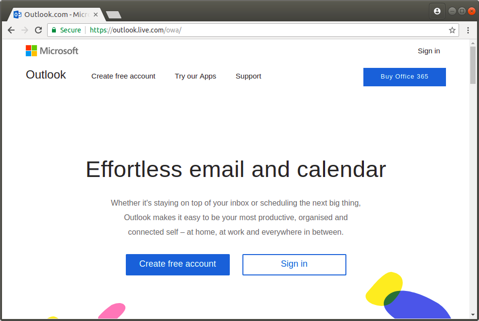
. Click the “Create free account” button:
. Now type in desired email address, e.g. mfpvideocalltest1, and select a server address (outlook.com or hotmail.com), the registered email address would be mfpvideocalltest1@outlook.com (assuming outlook.com is the selected server). Then click the Next button:
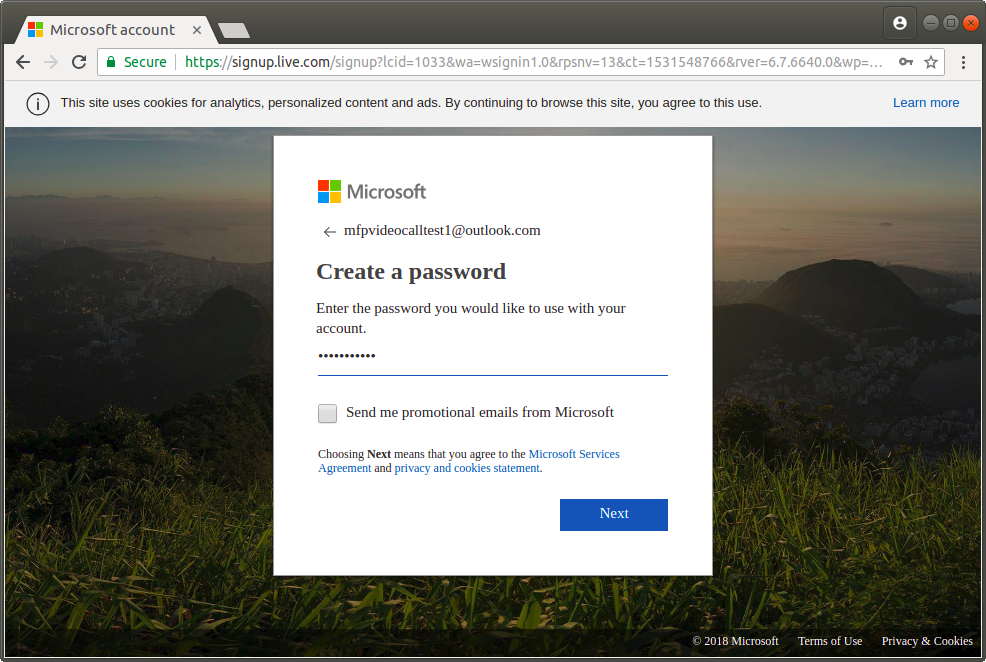
. Now user is asked to input password. Remeber don’t select “Send me promotional emails from Microsoft”. Then click Next:
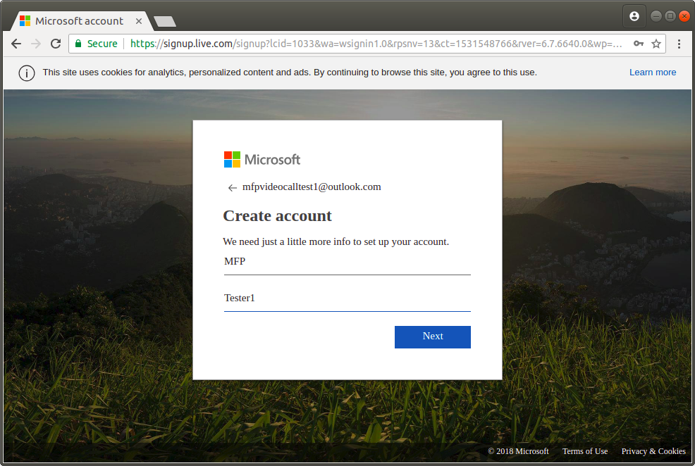
. Then user needs to input first name, last name, country/region and date of birth etc:
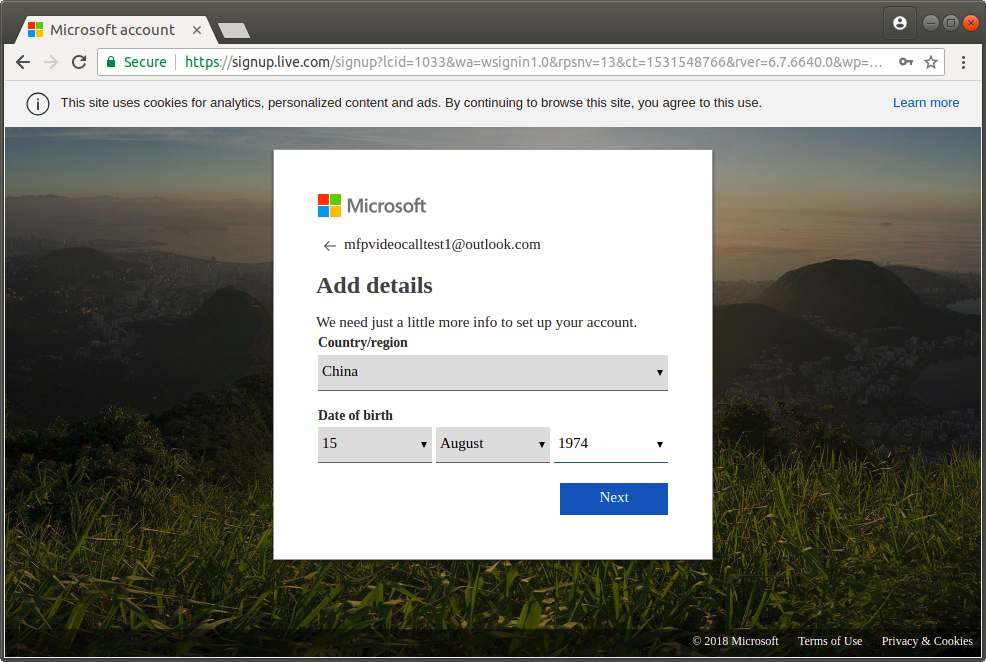
. Before creating the new account, user also needs to validate:

. Now user can see the welcome page and tips. Skip these:
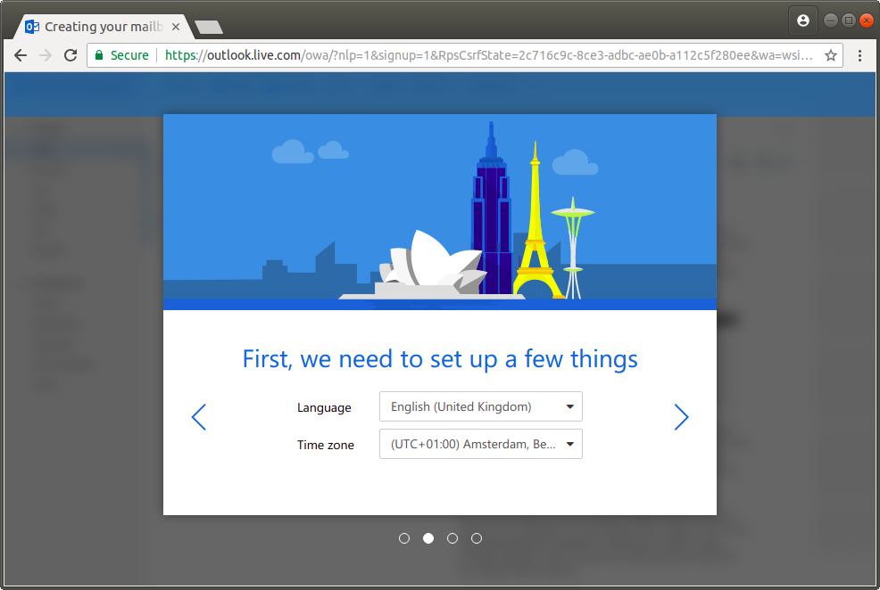
, the email in the inbox is shown:
 .
.
Microsoft takes some actions to protect users from email fraud and spams. These protections may bring some issues when using email to connect remote peer. The most common problem is spam misrecognition. User, as such, may not receive counter party’s email and peer-to-peer communication will fail. In this case, user has to login the web mail and move the misrecognised mail to inbox. Fortunately, Microsoft is smart enough to identify the following mails correctly after user takes this action. If still worried about lost email, user may change hotmail/outlook mail settings and explicitly add counter party’s email address in the trusted email list.
Furthermore, if Microsoft detects login from an IP address or a device never seen before, the login will be blocked and a system email will be sent to user asking for confirmation, as shown in the chart below:
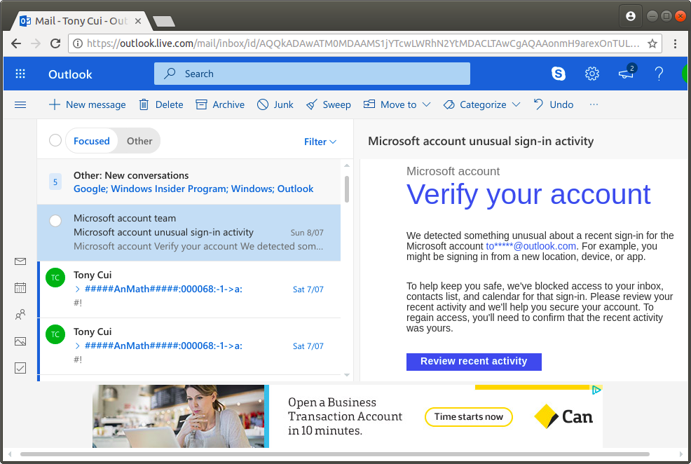
. However, when testing remote communication, a possible scenario is that user registered an email in one place using laptop, but uses the email in a mobile located in a different place. Thus, if login from the device is blocked, user has to go to the web mail, find this system email and click the “Review recent activity” button. Microsoft may ask for password and will also send a verification code to user’s mobile phone or another email address, as shown in the following chart:
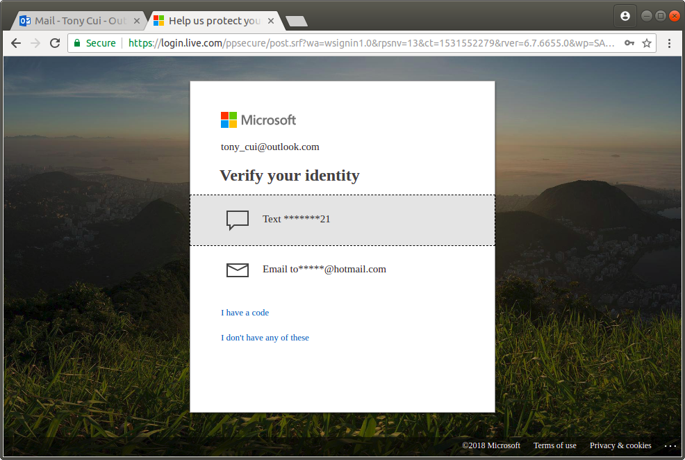
. After verification is passed, user is able to see the most recent activities, as shown in the following chart. If a login has been blocked, Microsoft will list all the details and ask the user if it was himself or herself. If user confirms, future logins from the new device or IP address will be allowed.
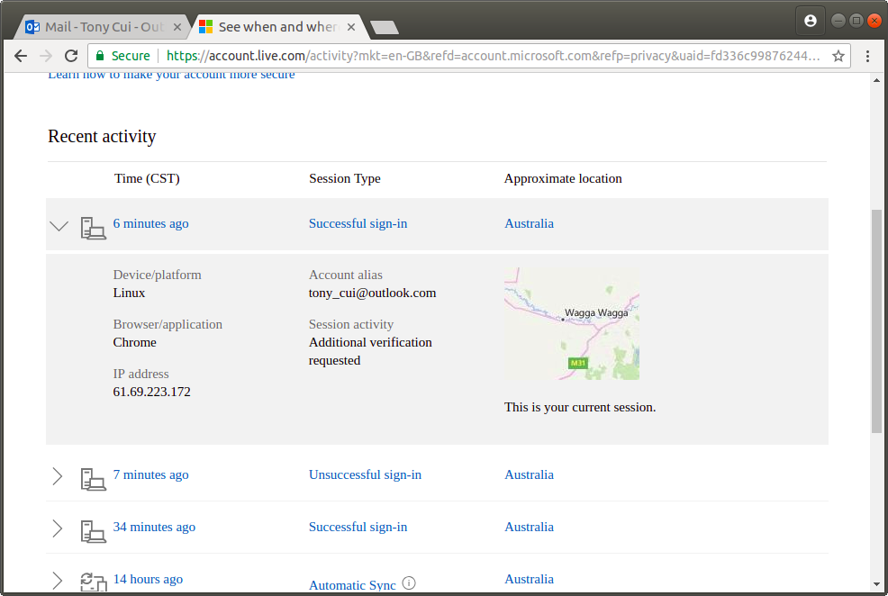
The third potential problem is related to the limit applied to new hotmail/outlook mail users. Newly registered account cannot send more than 5 emails in one day. Clearly this limit may fail some connecting attempts. Fortunately, Microsoft will, again, send a system mail and ask user to confirm no spam email is sent:

. User needs to click “verifying your account”, and tell Microsoft mobile number. Microsoft will then send a verification code to the phone number. If user correctly confirms the verification code, the phone number will be bound to the email address. The limit is lifted from then on.
 .
.
Google’s gmail is widely used in the world except mainland China. Its service is very stable. However, it is not that straightforward to configure.
It is well known that every Android phone is bound to a gmail account. So user must have already got a gmail account.
In order to apply a new gmail account, user may navigate to https://gmail.com, and follow the instructions to setup account name and password. To make things easier, PC instead of mobile phone should be used to do the following steps.
Different from Microsoft hotmail/outlook mail, by default Google gmail doesn’t allow email clients to check and send emails. To enable it, user has to click the gear icon in the right top of screen, select “Settings”, and then navigate to “Forwarding and POP/IMAP”, as shown in the following chart:

. In the “POP Download” section, select “Enable POP for mail that arrives from now on”. The “When messages are accessed with POP” item should be “Keep gmail copy in the inbox”. In the “IMAP Access” section, select “Enable IMAP”. Other settings may keep default values. Then click “Save Changes” to enable email client access.
Another tricky thing of gmail is its password. Two different cases are covered here. One is that the gmail account is not bound to the Android phone with Scientific Calculator Plus installed (to test peer-to-peer communication). This means Scientific Calculator Plus has to use a different password from web access. User needs to click the icon with nine small squares on the right top of the screen, then select Account:

. User then navigates to a new page with title “Control, protect and secure your account, all in one place”. Simply click the “Signing in to Google” link in the “Sign-in & security” section, as shown in the chart below:

. User now arrives at a “Sign-in & security” page. Scroll down to the “Password & sign-in method”, then click “2-Step Verification”:
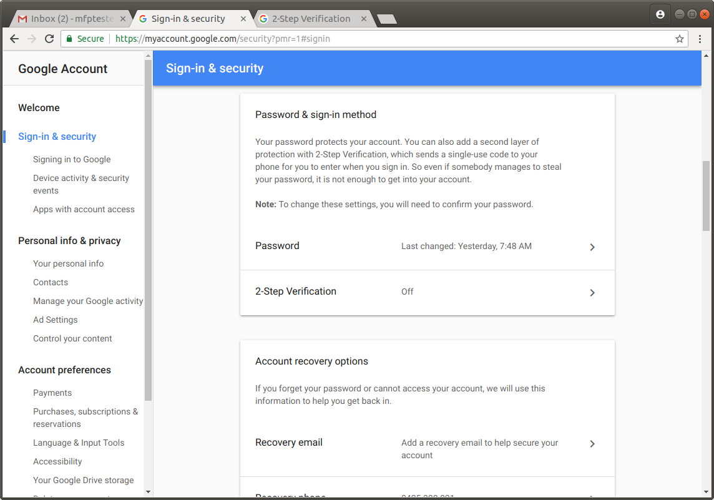
. Note that now user may be required to type in password, and Google may also send a verification code to user’s mobile number. If both password and verification code are correct, user will move to a new webpage to start 2-step verification. Simply click “GET STARTED” to kick it out. Meanwhile, a system email will be sent to the gmail address telling user 2-step verification has been started.
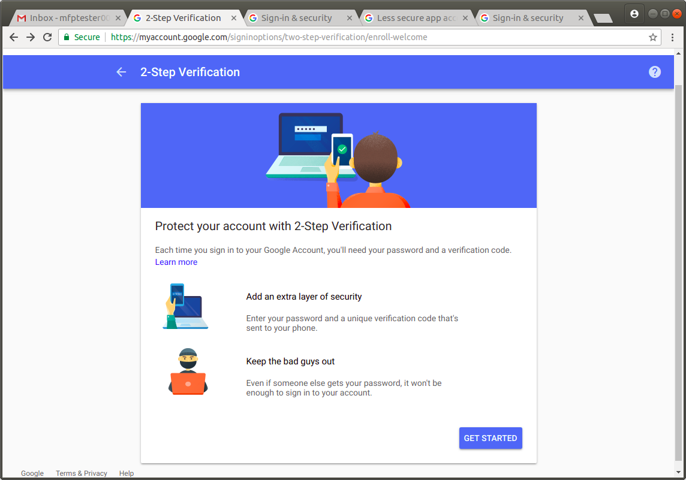
. Starting 2-step verification is not enough. It is just a prerequisite. Now user goes back to the gmail main interface, click the 9 square icon on the right top of the screen, select “Account” to move to the “Control, protect and secure your account, all in one place”. Simply click the “Signing in to Google” link in the “Sign-in & security” section and navigate to the “Sign-in & security” page. Scroll down to “Password & sign-in method”. Now a new item, “App passwords”, is added below “2-Step Verification”, as shown in the following chart:
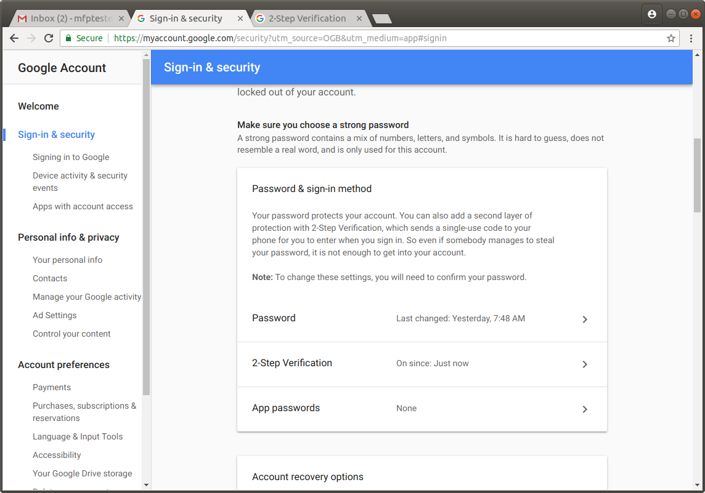
. Click “App passwords” and Google will ask user to type in password again. Google will also send user a verification code. If both password and verification code are correct, user will be allowed to move to a password generation page, as shown below:
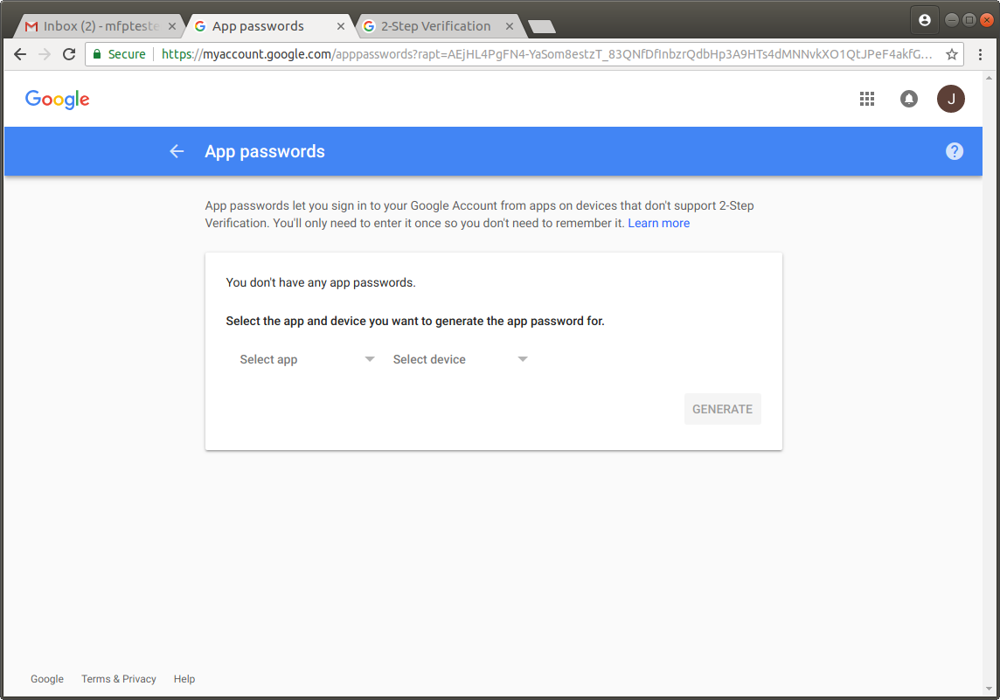
. Now user should click “Select app”, choose “Other (Custom name)” and type in Scientific Calculator Plus. In fact, user can type in an arbitrary name. However, the generated password can only be used by one type of App. After the name is input, the “GENERATE” button will turn to blue which means it is enabled. A password is generated for email client(s) by pushing the button:

. Note that the password includes 16 characters and no blank is between them. It will never expire except that user deletes it. User may save the password in a secure place, and then click “DONE” button.
The second case is the gmail account has been bound to the mobile for peer-to-peer test. This is good news since user is able to use the webmail password. However, Google believes the way that Scientific Calculator Plus access gmail is not secure. As such it will block the first attempt. User will receive an email to review the blocked sign-in activity (“Review blocked sign-in attempt”). User has to login gmail via webmail or Android gmail client, open this mail and click “allowing access to less secure apps”, as shown in the following chart:
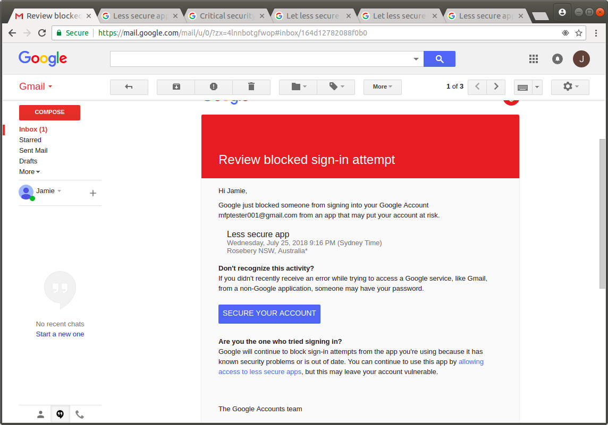
. Then user turns on the “Allow less secure app” switch, the issue is solved:

If a new device accesses a gmail box, Google will send a warning email to the gmail address headed “Critical security alert” (or something related). Google will tell the owner of the gmail address that it detects a possibly illegal operation and user is required to check activities of the gmail account:

. User needs to click the “CHECK ACTIVITY” button and then tell Google it was himself/herself by clicking the “YES” button:
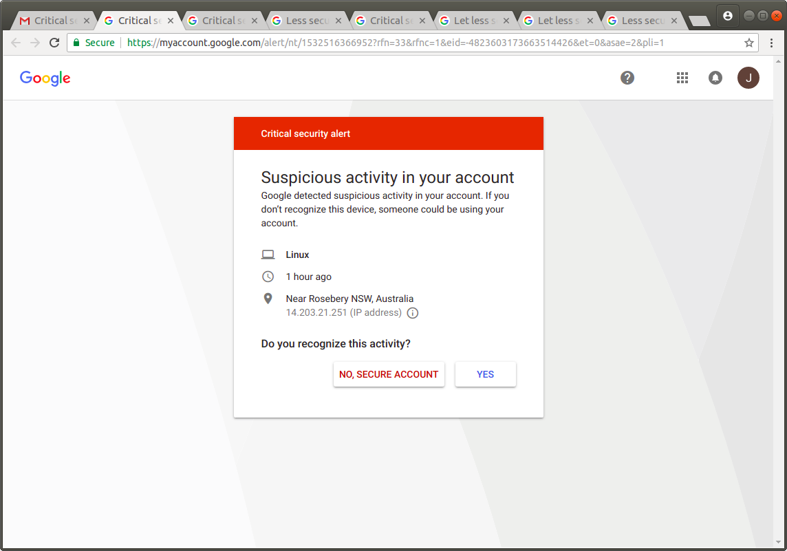.
Similar to Microsoft hotmail/outlook mail, the risk of spam misrecogition exits. In this case, user has to login to web mail or Android gmail client and move the mail from spam box to inbox, and add counter party’s email address in the trusted email list.
To setup peer to Peer Communication, user can start Scientific Calculator Plus, tap “Settings”, then select “Remote connection settings”, the config dialogue box is shown.
The first item is the local email address. Note that it must be a naked address, i.e. a format of xxxx@xxxx.xxx.xxx. No email owner’s name should be included. Characters like <, >, comma and colon are disallowed.
The second item is the password.
The third item is SMTP server address. If user is using Microsoft hotmail/outlook mail or Google gmail, SMTP address will be automatically filled. Otherwise user has to input the address himself/herself.
The forth item is SMTP service port. Again, it will be automatically filled for Microsoft hotmail/outlook mail or Google gmail.
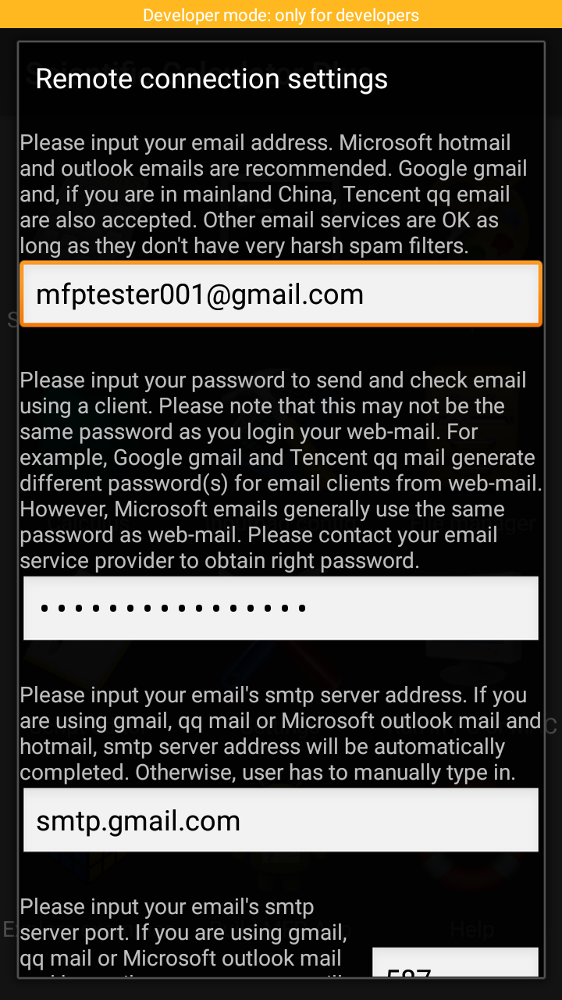.
The fifth item is IMAP server address. If user is using Microsoft hotmail/outlook mail or Google gmail, this address will be automatically filled. Otherwise user has to input the address himself/herself.
The sixth item is IMAP service port. Again, it will be automatically filled for Microsoft hotmail/outlook mail or Google gmail.
The seventh item is whether or not to start background signal service (i.e. sending / receiving emails). User can receive connect request only if this is enabled. However, enabling background service means quick battery discharge. Some phones, like OPPO, Xiaomi, Huawei and Samsung, suspend app running in background by default. To enable background signal service in these phones, user needs to manually disable battery saving settings for this app. For example, in OPPO phone, user needs to navigate to settings, select battery, in the app list, find this app and disable “Freeze when in background” and “Automatically optimise when an abnormally is detected”.
The eighth item is whether or not to allow background signal service to start activity when a connect request is coming. If this item is selected, camera and microphone will be started when a connect request is received.
The ninth item is whether or not to allow background signal service to launch destination input dialog box after a period of time. This is important for some phones like OPPO. Otherwise, background signal service may be killed by system.
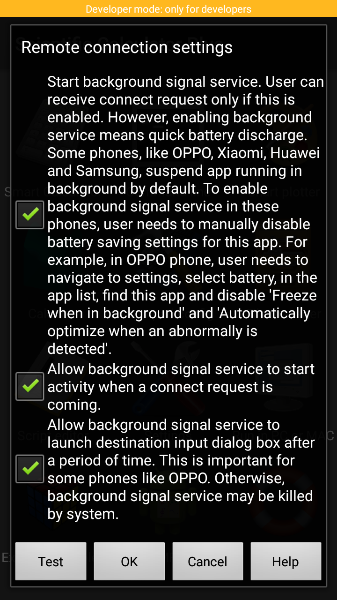.
After finish all the settings, user may click “OK” button and settings are saved. The dialogue box is dismissed. If user has selected to start background signal service, it will be started now. If user has deselected that item, background service will not be started. If it has been started, it will shut down.
If user clicks “Test” button, a text input dialogue box is shown. User needs to type in counter party’s email address. The email address cannot include owner name or any invalid character including <, >, comma and colon. If user leaves the input blank, Scientific Calculator Plus will try to connect to itself. After the remote email address is input, user clicks “OK” button and video communication interface will be started. A connection will be built up in 3~5 minutes amid some messages flashing over the screen. User may find state of the connection from the messages. If everything is OK, video window will be split into two. The big one shows image of user and the smaller in-frame one shows remote image. User can also exchange text messages with remote by typing the message and tapping “SEND” button, as shown in the following chart.
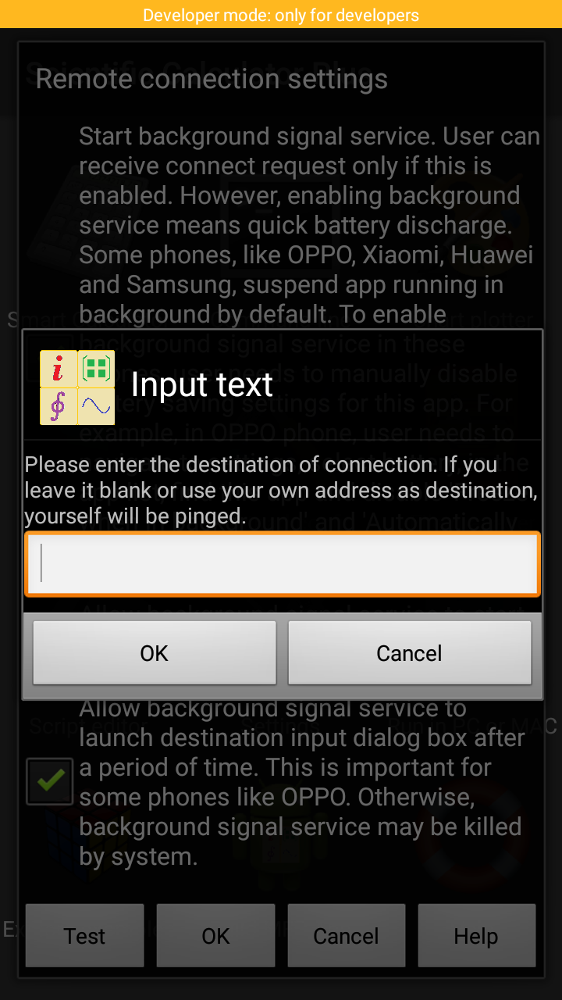.
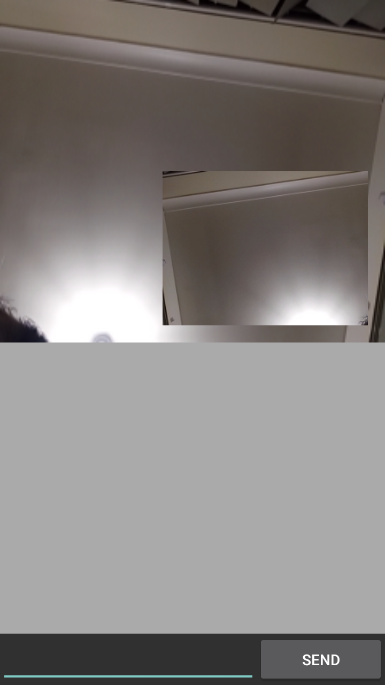.
. If no video connection is available after 7~8 minutes, while password, remote email address and other settings are definitely correct, user may login webmail to check if emails from counter party have been received. The title of the email should be #####AnMath#####:000068:1→s. User may also check if email(s) have been sent to the counter party. The title of the email(s) should be like #####AnMath#####:000068:0→s:0→s:0→s:0→s:0→s:0→s:0→s: . Not only inbox and outbox, but also spam box should be inspected. Missing some emails means the background service is not running properly. If user cannot figure out the reason, s\he may contact developer at cyzsoft@gmail.com.